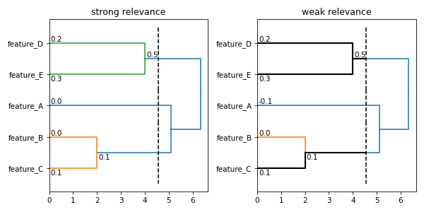

Analysis using Matplotlib¶

import itertools
import matplotlib.pyplot
import pandas
import subrela.analysis
import subrela.clustering
import subrela.plot.matplotlib
import subrela.records
def read_dataset(path):
# This is a dummy. You should read actual dataset from 'path'.
dataset = pandas.DataFrame({'feature_A': [0, 0], 'feature_B': [-5, -1],
'feature_C': [-5, 1], 'feature_D': [6, -2],
'feature_E': [6, 2], 'target': [0.2, 0.7]})
return dataset
def perform_regression(dataset, features, target):
X = dataset[features].to_numpy()
y = dataset[target].to_numpy()
# This is a dummy. You should perform a regression using 'X' and 'y'.
score = 0.1 * sum(dataset.columns.to_list().index(feature)
for feature in features)
return score
# prepare a dataset
dataset = read_dataset('/path/to/dataset/file')
features = ['feature_A', 'feature_B', 'feature_C', 'feature_D', 'feature_E']
# clustering
Z = subrela.clustering.get_clusters(dataset[features].to_numpy())
groups = subrela.clustering.get_groups(Z, 4.5)
# evaluate scores for feature subsets
flags = list(itertools.product([False, True], repeat=len(features)))
flags = flags[1:] # drop a case in which no features are used
scores = []
for fs in flags:
feats = [feature for feature, flag in zip(features, fs) if flag]
score = perform_regression(dataset, feats, 'target')
scores.append(score)
s = subrela.records.from_arrays(flags, scores)
# evaluate relevance scores
sr = subrela.analysis.get_strong_relevances(s, Z, clusters=groups,
descendants=True)
wr = pandas.concat([subrela.analysis.get_weak_relevances(s, Z, group)
for group in groups])
# prepare data for plots
leaf_data, node_data, tree_data, cut_data \
= subrela.plot.get_dendrogram_data(Z, labels=features, groups=groups)
trace_data = subrela.plot.get_trace_data(node_data, cut_data, sr, wr,
tol=0.1)
# make a figure
_, (sr_ax, wr_ax) = matplotlib.pyplot.subplots(nrows=1, ncols=2,
figsize=(8, 4))
sr_ax.set_title('strong relevance')
sr_ax.invert_yaxis()
subrela.plot.matplotlib.draw_dendrogram(sr_ax, leaf_data, tree_data,
cut_data, orientation='horizontal')
subrela.plot.matplotlib.draw_node_info(sr_ax, node_data, sr['relevance'],
formatter='{:.1f}'.format,
orientation='horizontal')
sr_ax.set_xlim(left=0)
wr_ax.set_title('weak relevance')
wr_ax.invert_yaxis()
subrela.plot.matplotlib.draw_dendrogram(wr_ax, leaf_data, tree_data,
cut_data, orientation='horizontal')
subrela.plot.matplotlib.draw_node_info(wr_ax, node_data, wr['relevance'],
formatter='{:.1f}'.format,
orientation='horizontal')
subrela.plot.matplotlib.draw_trace(wr_ax, trace_data,
orientation='horizontal')
wr_ax.set_xlim(left=0)
matplotlib.pyplot.show()